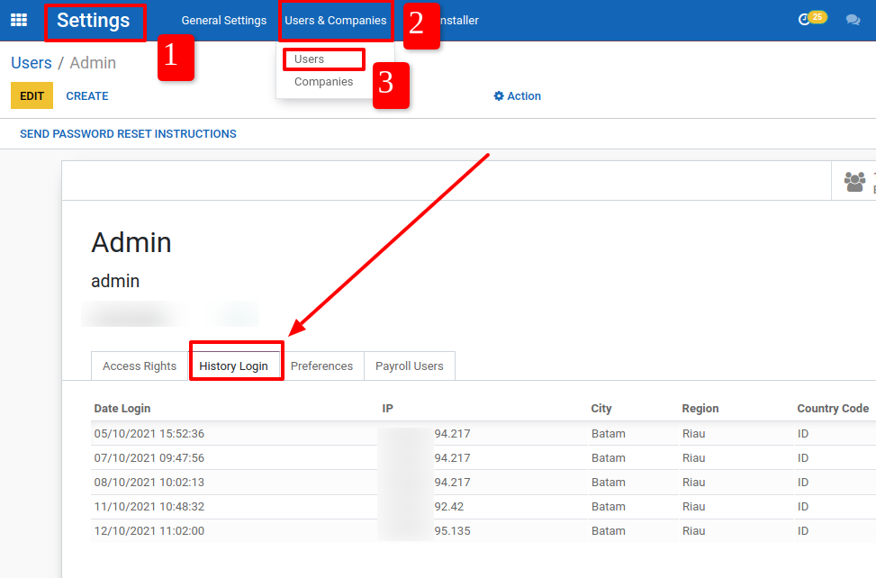
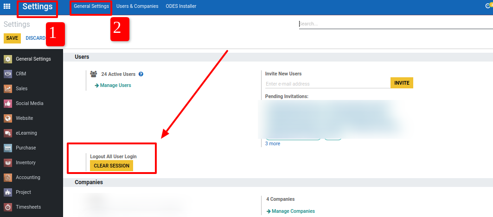

<section class="oe_container">
	<div>
		<h1 class="text-center">Restrict And Tracking User Login</h1>
		<br/>
		<p class="mb16 text-center text-black-dark" style="font-family: Roboto;font-weight: initial;color: #091E42;text-align:center;font-size: 13px;"> - You can tracking / check location and ip from user login.
		</p>
		<p class="mb16 text-center text-black-dark" style="font-family: Roboto;font-weight: initial;color: #091E42;text-align:center;font-size: 13px;"> - User cannot login with multi device, if user login with multi device so previosly login automatically logout from system.
		</p>
		<br/>
		<p class="mb16 text-center text-black-dark" style="font-family: Roboto;font-weight: initial;color: #091E42;text-align:center;font-size: 16px;">Position Tracking And Checking IP/Location From User Login.
		</p>
		
		<br/>
		<p class="mb16 text-center text-black-dark" style="font-family: Roboto;font-weight: initial;color: #091E42;text-align:center;font-size: 16px;">Please Use This Feature First To Clear Session User Login <br/> So That This Feature Can Start Well  .
		</p>
		<br/>
		
		<br/>
	</div>
</section>